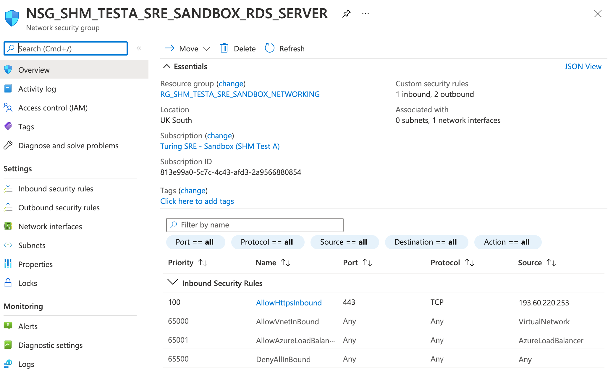
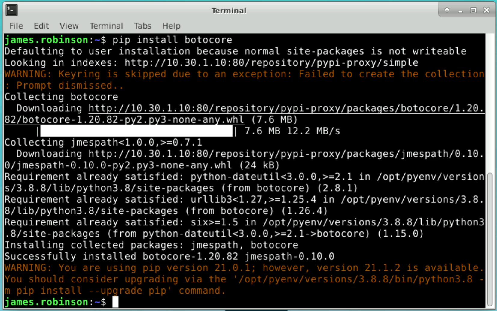
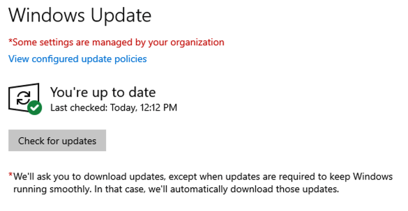

Security evaluation checklist¶
In this check list we aim to do the following things:
Establish our current claims about the Data Safe Haven
Establish what these security claims mean in terms of implementation
How we can verify that we actually do what we say
This diagram shows the security standards we’re trying to meet for Data Safe Haven Secure Research Environments (SREs). The security checklist currently focuses on checks that can verify these security requirements for tier 2+ SREs (with some steps noted as specific to a tier):

How to use this checklist¶
Ensure you have an SHM and attached SRE(s) that you wish to test.
Note: Some parts of the checklist are only relevant when there are multiple SREs attached to the same SHM
Work your way through the actions described in each section, taking care to notice each time you see a :camera: or a :white_check_mark: and the word Verify:
:camera: Where you see the camera icon, there should be accompanying screenshot(s) of evidence for this item in the checklist (you may wish to save your own equivalent screenshots as evidence)
:white_check_mark: This indicates a checklist item for which a screenshot is either not appropriate or difficult
Contents¶
Prerequisites¶
Deployed SHM that you are testing
Deployed SRE A that is attached to the SHM
Deployed SRE B that is attached to the same SHM
VPN access to the SHM that you are testing
If you haven’t already, you’ll need download a VPN certificate and configure VPN access for the SHM
Make sure you can use Remote Desktop to log in to the domain controller (DC1) and the network policy server (NPS).
The following users will be needed for this checklist
SRE standard user who is a member of the SRE A research users group
Create a new user without MFA
Following the SRE deployment guide for setting up a non privileged user account, create an account, then check the following before (and after (adding them to the
SG <SRE ID> Research Usersgroup.Visit https://aka.ms/sspr in an incognito browser
Attempt to login and reset password, but do not complete MFA (see these steps)
System administrator who has
Contributorpermissions (or higher) on the underlying Azure subscriptionData provider who has no accounts on the Safe Haven system
1. Multifactor Authentication and Password strength¶
We claim:¶
Users are required to authenticate with Multi Factor Authentication (MFin order to access the secure analysis environment.
Passwords are strong
Which means:¶
Users must set up MFA before accessing the secure analysis environment. Users cannot access the environment without MFA. Users are strongly advised to create passwords of a certain strength.
Verify by:¶
Check that the SRE standard user cannot access the apps
Attempt to login to the remote desktop web client (
https://<SRE ID>.<safe haven domain> (eg. https://sandbox.turingsafehaven.ac.uk/):camera: Verify before adding to group: Guacamole: User is prompted to setup MFA

:camera: Verify before adding to group: Microsoft Remote Desktop: Login works but apps cannot be viewed
Check that adding the SRE standard user to the relevant
Research Usersgroup underSafe Haven Security Groupson the domain controller does not give them access:camera: Verify after adding to group: Guacamole: User is prompted to setup MFA
:camera: Verify after adding to group: Microsoft Remote Desktop: Login works and apps can be viewed
:camera: Verify after adding to group: Microsoft Remote Desktop: attempt to login to DSVM Main (Desktop) fails
Check that the SRE standard user is able to successfully set up MFA
Visit https://aka.ms/mfasetup in an incognito browser
Login as the user you set up
:white_check_mark: Verify: user guided to set up MFA
Set up MFA as per the user guide instructions
:camera: Verify: successfully set up MFA

Check that the SRE standard user can authenticate with MFA
Login into the remote desktop web client (
https://<SRE ID>.<safe haven domain> (eg. https://sandbox.turingsafehaven.ac.uk/):camera: Verify: Guacamole: respond to the MFA prompt

:camera: Verify: Microsoft Remote Desktop: attempt to log in to DSVM Main (Desktop) and respond to the MFA prompt
Check that the SRE standard user can access the DSVM desktop
Login into the remote desktop web client (
https://<SRE ID>.<safe haven domain> (eg. https://sandbox.turingsafehaven.ac.uk/):camera: Verify: Guacamole: connect to Desktop: Ubuntu0
:camera: Verify: Microsoft Remote Desktop: connect to DSVM Main (Desktop)
2. Isolated Network¶
We claim:¶
The DSH Virtual Network is isolated from external connections (both tier 2 and 3)
Which means:¶
Users cannot access any part of the network without already being in the network. Being part of the network involves connecting using an SHM specific Management VPN.
Whilst in the network, one cannot use the internet to connect outside the network.
SREs in the same SHM are still isolated from one another.
Verify by:¶
Connect to the SHM DC, NPS, Data server if and only if connected to the SHM VPN:
Connect to the SHM VPN
Attempt to connect to the SHM DC and SHM NPS
:white_check_mark: Verify: Connection works
Disconnect from the SHM VPN
Attempt to connect to the SHM DC and SHM NPS
:white_check_mark: Verify: Connection fails
Fail to connect to the internet from within a DSVM on the SRE network.
Login as a user to a DSVM from within the SRE by using the web client.
Choose your favourite three websites and attempt to access the internet using a browser
:camera: Verify: Connection fails

:camera: Verify: that you cannot access a website using curl

:camera: Verify: that you cannot get the IP address for a website using nslookup

Check that users cannot connect from one SRE to another one in the same SHM, even if they have access to both SREs
Ensure that the SRE standard user is a member of the research users group for both SRE A and SRE B
Connect to SRE A as the SRE standard user by using the web client.
Log in to the DSVM remote desktop:
Open the
Terminalapp from the dock at the bottom of the screen and enterssh -v -o ConnectTimeout=10 <IP address>where the IP address is one for a DSVM in SRE B (you can find this in the Azure portal):camera: Verify: Connection fails
Check that users cannot copy files from one SRE to another one in the same SHM
Connect to a DSVM in SRE A as the SRE standard user by using the web client.
In a separate browser window, do the same for SRE B.
Attempt to copy and paste a file from one SRE desktop to another
:white_check_mark: Verify: Copy and paste is not possible
Check that the network rules are set appropriately to block outgoing traffic
Visit the portal and find
NSG_SHM_<SHM ID>_SRE_<SRE ID>_COMPUTE, then click on theOutbound security rulesunderSettings:camera: Verify: There exists an NSG rule with Destination "Internet" and Action "Deny" and that no higher priority rule allows connection to the internet.

3. User devices¶
We claim:¶
At tier 3, only managed devices can connect to the DSH environment.
At tier 2, all kinds of devices can connect to the DSH environment (with VPN connection and correct credentials).
This means¶
A managed device is a device provided by a partner institution in which the user does not have admin or root access.
Network rules for the higher tier Environments can permit access only from Restricted network IP ranges that only permit managed devices to connect.
Verify by:¶
For tier 2:
One can connect regardless of device as long as one has an allow-listed IP address and credentials
Using a personal device, connect to the environment using an allow-listed IP address and credentials
:white_check_mark: Verify: Connection succeeds
Using a managed device, connect to the environment using an allow-listed IP address and credentials.
:white_check_mark: Verify: Connection succeeds
For tier 3:
A device is managed by checking user permissions and where the device has come from. We should check that it is managed by the partner institution’s IT team.
Check that the device is managed by the partner institution IT team
:white_check_mark: Verify: The user lacks root access
A device is able to connect to the environment if and only if it is managed (with correct VPN and credentials)
Using a personal device, attempt to connect to the environment using the correct VPN and credentials
:white_check_mark: Verify: Connection fails
Using a managed device, attempt to connect to the environment using the correct VPN and credentials
:white_check_mark: Verify: Connection succeeds
For tiers 2 and above:
There are are network rules permitting access only from allow-listed IP addresses
Navigate to the NSG for this SRE in the portal:
Microsoft Remote Desktop:
NSG_SHM_<SHM ID>_SRE_<SRE ID>_RDS_SERVERGuacamole:
NSG_SHM_<SHM ID>_SRE_<SRE ID>_GUACAMOLE
:camera: Verify: The NSG has network rules allowing inbound access from allow-listed IP addresses only

:white_check_mark: Verify: All other NSGs (apart from
NSG_SHM_<SHM ID>_SRE_<SRE ID>_DEPLOYMENT) have an inboundDeny Allrule and no higher priority rule allowing inbound connections from outside the Virtual Network (apart from the Admin VPN in some cases).
4. Physical security¶
We claim:¶
At tier 3 access is limited to certain secure physical spaces
Which means:¶
Medium security research spaces control the possibility of unauthorised viewing. Card access or other means of restricting entry to only known researchers (such as the signing in of guests on a known list) is required. Screen adaptations or desk partitions can be adopted in open-plan spaces if there is a high risk of “visual eavesdropping”.
Firewall rules for the Environments can permit access only from Restricted network IP ranges corresponding to these research spaces.
Verify by:¶
For tier 3:
Connection from outside the secure physical space is not possible.
Attempt to connect to the tier 3 SRE web client from home using a managed device and the correct VPN connection and credentials
:white_check_mark: Verify: connection fails
Connection from within the secure physical space is possible.
Attempt to connect from research office using a managed device and the correct VPN connection and credentials
:white_check_mark: Verify: connection succeeds
:white_check_mark: Verify: Check the network IP ranges corresponding to the research spaces and compare against the IPs accepted by the firewall.
:white_check_mark: Verify: Confirm in person that physical measures such as screen adaptions or desk partitions are present.
5. Remote connections¶
We claim:¶
Connections can only be made via remote desktop (Tier 2+)
This means¶
User can connect via remote desktop but cannot connect through other means such as SSH
Verify by:¶
Unable to connect as the SRE standard user to the remote desktop server via SSH
Attempt
sshlogin withssh <user.name>@<SRE ID>.<safe haven domain>(e.g.ssh -v -o ConnectTimeout=10 ada.lovelace@sandbox.turingsafehaven.ac.uk):camera: Verify: ssh login by fully-qualified domain name fails
Find the public IP address for the remote desktop server VM (Microsoft Remote Desktop:
RDG-SRE-<SRE ID>; Guacamole:GUACAMOLE-SRE-<SRE ID>) by searching for this VM in the portal, then looking atConnectunderSettings.Attempt
sshlogin withssh <user.name>@<public IP>(e.g.ssh ada.lovelace@8.8.8.8):camera: Verify: ssh login by public IP address fails

:white_check_mark: Verify: The remote desktop server (
RDG-SRE-<SRE ID>) is the only SRE resource with a public IP address
6. Copy-and-paste¶
We claim:¶
Copy and paste is disabled on the remote desktop
Which means:¶
One cannot copy something from outside the network and paste it into the network. One cannot copy something from within the network and paste it outside the network.
Verify by:¶
Users are unable to copy some text from outside the network, into a DSVM and vice versa
Copy some text from your deployment device
Login to a DSVM as the SRE standard user via the remote desktop web client
Open up a notepad or terminal on the DSVM and attempt to paste the text to it.
:white_check_mark: Verify: paste fails
Write some next in the note pad or terminal of the DSVM and copy it
Attempt to copy the text externally to deployment device (e.g. into URL of browser)
:white_check_mark: Verify: paste fails
Users can copy between VMs inside the network
Login to a DSVM as the SRE standard user via the remote desktop web client
Open up a notepad or terminal on the DSVM and attempt to paste the text to it.
In another tab or browser connect to a different DSVM (or to the same VM via the SSH connection) using the remote desktop web client
Attempt to paste the text to it.
:white_check_mark: Verify: paste succeeds
7. Data ingress¶
We claim:¶
All data transfer to the Turing should be via our secure data transfer process, which gives the Dataset Provider time-limited, write-only access to a dedicated data ingress volume from a specific location.
Data is stored in a holding zone until approved to be added for user access.
This means¶
Prior to access to the ingress volume being provided, the Dataset Provider Representative must provide the IP address(es) from which data will be uploaded and an email address to which a secure upload token can be sent. Once these details have been received, the Turing will open the data ingress volume for upload of data.
To minimise the risk of unauthorised access to the dataset while the ingress volume is open for uploads, the following security measures are in place:
Access to the ingress volume is restricted to a limited range of IP addresses associated with the Dataset Provider and the Turing.
The Dataset Provider receives a write-only upload token. This allows them to upload, verify and modify the uploaded data, but does not viewing or download of the data. This provides protection against an unauthorised party accessing the data, even they gain access to the upload token.
The upload token expires after a time-limited upload window.
The upload token is transferred to the Dataset Provider via a secure email system.
Verify by:¶
To test all the above, you will need to act both as the administrator and data provider:
As the system administrator generate a secure upload token and check it can be sent to the email address provided by the data provider via a secure email system
:white_check_mark: Verify: that a secure upload token can be created with write-only permissions, by following the instructions in the administrator document, using the IP address of your own device in place of that of the data provider
:white_check_mark: Verify: that you are able to send a secure email containing this token (e.g. send it to your own email for testing purposes)
Ensure that data ingress works for connections from within the accepted IP address and does not work for connections outside the IP address, even if the correct upload token is present.
As the data provider, ensure you’re working from a device that has an allow-listed IP address
Using the secure upload token with write-only permissions and limited time period that you set up in the previous step, follow the ingress instructions for the data provider
:white_check_mark: Verify: that writing succeeds by uploading a file
:white_check_mark: Verify: that attempting to open or download any of the files results in the following error:
Failed to start transfer: Insufficient credentials.under theActivitiespane at the bottom of the MS Azure Storage Explorer windowSwitch to a device that lacks an allow-listed IP address (or change your IP with a VPN)
Attempt to write to the ingress volume via the test device
:white_check_mark: Verify: that the access token fails.
Check the token duration and ensure that the upload fails if the duration has expired.
Create a write-only token with short duration
:white_check_mark: Verify: you can connect and write with the token during the duration
:white_check_mark: Verify: you cannot connect and write with the token after the duration has expired
:white_check_mark: Verify: Check that the overall ingress works by uploading different kinds of files, e.g. data, images, scripts (if appropriate).
8. Data egress¶
We claim:¶
SREs contain an /output volume, in which SRE users can store data designated for egress.
This means:¶
A system administrator can view and download data in the /output volume via Azure Storage Explorer.
Verify by:¶
Confirm that a non-privileged user is able to read the different storage volumes and write to Output
Login to a DSVM as the SRE standard user via the remote desktop web client
Open up a file explorer and search for the various storage volumes
:white_check_mark: Verify: that the
/outputvolume exists and can be read and written to:white_check_mark: Verify: that the permissions of other storage volumes match that described in the user guide
Confirm that the different volumes exist in blob storage and that logging on requires domain admin permissions
As the system administrator, follow the instructions in the administrator document on how to access files set for egress with Azure Storage Explorer
:white_check_mark: Verify: You can see the files written to the Output storage volume (including any you created as a non-privileged user in step 1)
:white_check_mark: Verify: that a written file can be taken out of the environment via download
9. Software Ingress¶
We claim:¶
The base data science virtual machine provided in the secure analysis Environments comes with a wide range of common data science software pre-installed, as well as package mirrors. For other kinds of software this must be added separately via ingress.
Software is stored in a holding zone until approved to be added for user access.
Which means:¶
For tier 0/1 environments, outbound internet access means users can directly download their software from the internet. For tier 2+ environments we use the secure data transfer process.
Installation during deployment
If known in advance, software can be installed during DSVM deployment whilst there is still internet access, but before project data is added. Once the software is installed, the DSVM undergoes ingress into the environment with a one way lock.
Installation after deployment
Once a DSVM has been deployed into the analysis environment it cannot be moved out. There is no outbound internet access.
Software is added via ingress in a similar manner to data. Researchers are provided temporary write-only access to the software ingress volume (external mode). The access is then revoked and the software is then reviewed. If it passes review, the software ingress volume is changed to provide researchers with read-only access to the environment (internal mode).
If the software requires administrator rights to install, a System Manager must do this. Otherwise, the researcher can do this themselves.
Verify by:¶
Check that some software tools were installed as expected during deployment
Login to a DSVM as the SRE standard user via the remote desktop web client
:camera: Verify: Confirm that the following programmes can be opened without issue: DBeaver, RStudio, PyCharm and Visual Studio Code

Check that it’s possible to grant and revoke software ingress capability by following the instructions in the Safe Haven Administrator Documentation:
:white_check_mark: Verify: You can generate a temporary write-only upload token
:white_check_mark: Verify: You can upload software as a non-admin with this token, but write access is revoked after the temporary token has expired
:white_check_mark: Verify: Software uploaded to the by a non-admin can be read by administrators
:white_check_mark: Verify: Check that the SRE standard user cannot install software that requires administrator rights (e.g. anything that is installed with
apt)
10. Package mirrors¶
We claim:¶
Tier 2: User can access all packages from PyPI/CRAN
Tier 3: User can only access approved packages from PyPI/CRAN
This means:¶
Tier 2: The user can access any package from our mirrors. They can freely use these packages without restriction.
Tier 3: The user can only access a specific pre-agreed set of packages. They will be unable to download any package not on the allowed list.
Verify by:¶
Tier 2:
Download packages from the full mirror.
Login as the SRE standard user into a DSVM via remote desktop web client
Open up a terminal
Attempt to install any package that is not included out-of-the-box (for example, try
pip install botocore):camera: Verify: You can install the package

Tier 3:
Download packages on the allowed list (see the lists in
environment_configs/package_lists)Login as the SRE standard user into a DSVM via remote desktop web client
Attempt to install a package on the allowed list that is not included out-of-the-box (for example, try
pip install aero-calc)Then attempt to download a package that is not included in the allowed list (for example, try
pip install botocore):camera: Verify: the first download succeeds and the second fails

11. Azure Firewalls¶
We claim:¶
An Azure Firewall ensures that the administrator VMs have the minimal level of internet access required to function.
Which means:¶
Whilst all user access VMs are entirely blocked off from the internet, this is not the case for administrator access VMs such as the SHM-DC, SRE DATA server. An Azure Firewall governs the internet access provided to these VMs, limiting them mostly to downloading Windows updates.
Verify by:¶
Admin has limited access to the internet
As the system administrator use Remote Desktop to connect to the SHM domain controller VM
Attempt to connect to a non-approved site, such as
www.google.com:camera: Verify: connection fails
Admin can download Windows updates
As the system administrator use Remote Desktop to connect to the SHM domain controller VM
Click on
Start -> Settings-> Update & SecurityClick the
Downloadbutton:camera: Verify: download and update successful
